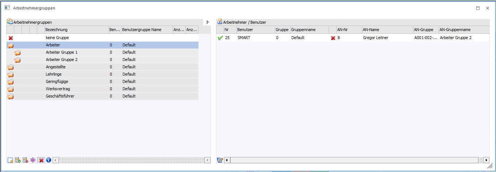
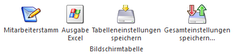
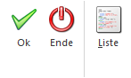

Über den Menüpunkt
1 Stammdaten
1 Arbeitnehmer
1 Arbeitnehmergruppen
können Arbeitnehmergruppen angelegt werden, die in weiterer Folge auch den Arbeitnehmern und Mitarbeitern zugewiesen werden können.

Der Menüpunkt ist in 2 Bereiche bzw. Tabellen gegliedert:
Arbeitnehmergruppen
In diesem Bereich werden alle bereits vorhanden Arbeitnehmergruppen aufgelistet. Die Baumstruktur kann zu- und aufgeklappt werden, damit können alle Ebenen angezeigt werden.
Ø Bezeichnung
Name bzw. Bezeichnung der Arbeitnehmergruppe.
Ø Benutzergruppen-Nummer
In diesem Feld ist es möglich über den Matchcode eine Benutzergruppe zu zuordnen.
Ø Benutzergruppen Name
Name bzw. Bezeichnung der Benutzergruppe wird angezeigt, diese Spalte ist nicht editierbar.
Ø Anzahl Benutzer
In diesem Feld wird die Anzahl der WinLine Benutzer der aus der Benutzergruppe angezeigt. Das Feld ist nicht editierbar.
Ø Anzahl Arbeitnehmer
In diesem Feld wird die Anzahl der zugeordneten Arbeitnehmer bzw. Mitarbeiter angezeigt. Das Feld ist nicht editierbar.
Hinweis:
Unter dem Eintrag " keine Gruppe" werden alle Arbeitnehmer bzw. Mitarbeiter die entweder keiner Gruppe oder einer "nicht mehr vorhandenen" Gruppe zugeordnet worden sind.
Tabellenbuttons Arbeitnehmergruppen:
Ø Neue AN-Gruppe (Hauptebene)
Durch Drücken des Buttons "Neue AN-Gruppe" können neue Haupteinträge bzw. -gruppen angelegt werden.
Ø Sub-Gruppe einfügen
Mit dem Button "Sub-Gruppe einfügen" kann zu einem Haupteintrag bzw. -gruppe eine Unterebene bzw. Subebene eingefügt werden.
Ø Gruppe entfernen
Mit dem Button "Gruppe entfernen" können sowohl Hauptgruppen als auch Subgruppen gelöscht werden.
Ø Benutzergruppen automatisch anlegen/zuordnen
Mit dem Button "Benutzergruppen automatisch anlegen/zuordnen" werden anhand der Arbeitnehmergruppen die Benutzergruppen automatisch angelegt und der Arbeitnehmergruppe zugeordnet.
Ø keine Gruppe/ungültige Gruppe
Mit dem Button "keine Gruppe/ungültige Gruppe" kann der erste Eintrag mit dem roten X an- oder ausgeblendet werden.
Ø Anzahl berechnen
Der Button "Anzahl berechnen" errechnet die Anzahl der Benutzer bzw. Arbeitnehmer und Mitarbeiter je Gruppe.
Ø Ausgabe Excel
Der Inhalt der Arbeitnehmergruppen-Tabelle kann in eine Excel-Tabelle ausgegeben werden.
Ø Tabelleneinstellungen speichern
Die Spalten einer Tabelle können grundsätzlich an beliebige Positionen verschoben, bzw. in der Breite entsprechend angepasst werden. Durch Anwahl des Buttons "Tabelleneinstellungen speichern" werden die Einstellungen benutzerspezifisch gespeichert und bei dem nächsten Aufruf des Programmpunktes wieder vorgeschlagen.
Ø Gesamteinstellungen speichern
Im Gegensatz zu "Tabelleneinstellungen speichern" können mit "Gesamteinstellungen speichern" mehrere Tabellenaufbauten gespeichert und nach Wunsch geladen werden. Zusätzlich werden Sonderfunktionen der Tabelle (z.B. "Spalte gruppieren") ebenfalls bei der Speicherung bedacht.
Arbeitnehmer/Benutzer
In dieser Tabelle werden alle Arbeitnehmer und Mitarbeiter angezeigt in welcher Arbeitnehmergruppe sie sich befinden.
Ø Nr.
Anzeige des WinLine Benutzernummer, welcher beim Arbeitnehmer bzw. Mitarbeiter hinterlegt ist. Das Feld ist nicht editierbar.
Ø Benutzer
Anzeige des Benutzernamen, welcher beim Arbeitnehmer bzw. Mitarbeiter hinterlegt ist. Das Feld ist nicht editierbar.
Ø Gruppe
Aus der Auswahllistbox können die Benutzergruppen ausgewählt werden.
Ø Gruppenname
Anzeige des Namens von der Benutzergruppe. Das Feld kann nicht editiert werden.
Ø AN-Nummer
Über den Matchcode bzw. die Autovervollständigung kann ein Arbeitnehmer bzw. Mitarbeiter zugeordnet werden.
Ø AN-Name
Anzeige des Namens vom Arbeitnehmer bzw. Mitarbeiter. Das Feld ist nicht editierbar.
Ø AN-Gruppe
Über den Matchcode kann für den Arbeitnehmer bzw. Mitarbeiter eine Arbeitnehmergruppe ausgewählt werden.
Ø AN-Gruppenname
Anzeige des Namens der Arbeitnehmergruppe. Das Feld ist nicht editierbar.
Tabellenbuttons Arbeitnehmer/Benutzer

Ø Mitarbeiterstamm
Durch Drücken des Buttons "Mitarbeiterstamm" wird vom jeweiligen Arbeitnehmer bzw. Mitarbeiter der Mitarbeiterstamm geöffnet.
Hinweis:
Änderungen für den Typ Arbeitnehmer können im Mitarbeiterstamm nicht gespeichert werden, nur im Arbeitnehmerstamm.
Ø Ausgabe Excel
Der Inhalt der Arbeitnehmer/Benutzer-Tabelle kann in eine Excel-Tabelle ausgegeben werden.
Ø Tabelleneinstellungen speichern
Die Spalten einer Tabelle können grundsätzlich an beliebige Positionen verschoben, bzw. in der Breite entsprechend angepasst werden. Durch Anwahl des Buttons "Tabelleneinstellungen speichern" werden die Einstellungen benutzerspezifisch gespeichert und bei dem nächsten Aufruf des Programmpunktes wieder vorgeschlagen.
Ø Gesamteinstellungen speichern
Im Gegensatz zu "Tabelleneinstellungen speichern" können mit "Gesamteinstellungen speichern" mehrere Tabellenaufbauten gespeichert und nach Wunsch geladen werden. Zusätzlich werden Sonderfunktionen der Tabelle (z.B. "Spalte gruppieren") ebenfalls bei der Speicherung bedacht.
Buttons

Ø OK
Durch Anklicken des OK-Buttons werden alle Änderungen gespeichert.
Ø Ende
Durch Drücken der ESC-Taste wird das Fenster geschlossen.
Ø Liste
Durch Anklicken des Liste-Buttons wird eine Liste aller angelegten Arbeitnehmergruppen am Bildschirm angezeigt. Neben der Gruppenstruktur werden auch die zugeordneten AN mit angezeigt, außerdem ist ersichtlich (in Klammer), wie viele AN einer Gruppe zugeordnet sind. Durch einen Klick auf die AN-Nummer kann direkt der AN-Stamm aufgerufen werden.